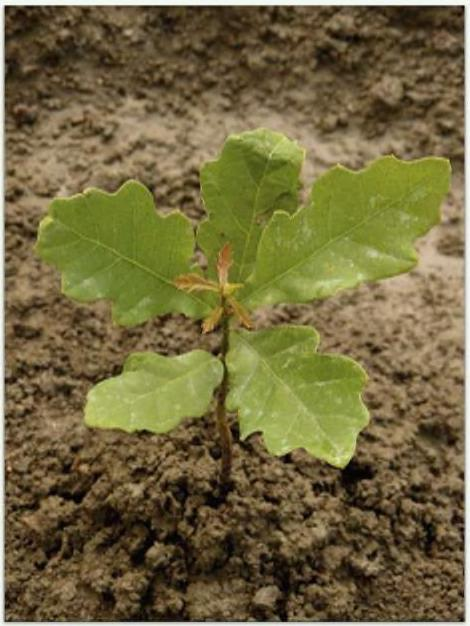

Ủ đây một lần nữa, lại là 'sống sót. Không phải “sự phát triển' hay 'bộ nãơ' hay “sự hiểu biết sâu sắc. Khả năng bám trụ lầu, không bị xóa sổ hay bó tay chính là điều tạo nên sự khác biệt lớn nhất. Đây phải là nền tảng trong chiến lược của bạn, cho dù đó là đầu tư hay sự nghiệp hay một công việc kinh doanh bạn sở hữu. Có hai lý do tại sao tâm lý sinh tồn lại rất quan trọng với tiển bạc. Một điều hiển nhiên là rất ít thành tựu lớn đến mức đáng để bạn phải xóa bỏ bản thân. (ái khác, như ta đã thấy trong chương 4, là sự không trực quan của lãi kép. Lãi kép chỉ hoạt động nếu bạn có thể tăng trưởng tài sản trong nhiều năm và hơn nữa. Giống như trồng cây sồi: Một năm phát triển sẽ không bao giờ cho thấy nhiều tiến bộ, 10 năm có thể tạo ra sự khác biệt có ý nghĩa và 50 năm có thể tạo ra một điều gì đó hoàn toàn phi thường.
